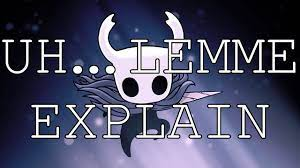
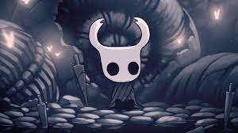
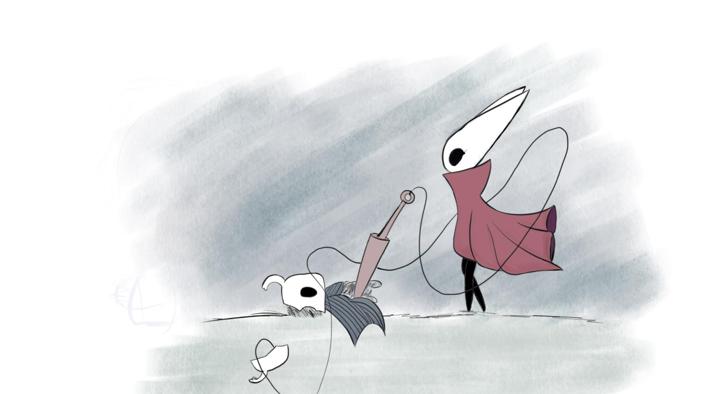
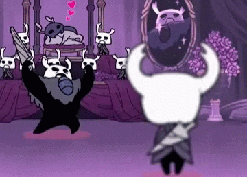
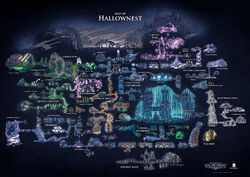

Buenas, esta es la página web de Hollow Knight. Os intentaré explicar el lore básico de esta juego destriparos la historia.
Muy bien, empecemos con los personajes importantes de nuestra historia:
Muy bien, empecemos con El Caballero. Este personaje es nuestro protagonista y lo controlaremos a lo largo de nuestra aventura. La historia de este personaje es algo curiosa, ya que no es un habitante de este mundo, sino que es una creación artificial del rey de Hallownest, el lugar en el que ocurre la aventura. Iremos consiguiendo diferentes habilidades y objetos para fortalecerlo y hacer de nuestra aventura una más sencilla.
Esta chica es un personje recurrente en el juego. Nos la iremos encontrando en varias ocasiones, incluso combatiremos en un par de ocasiones con ella.
Este personaje es uno de los más queridos por su característica personalidad, ya que por su forma de actuar nos da a entender que es el más fuerte de Hollownest, pero, realmente, no lo es, y veremos de lo que es capaz en nuestro combate contra el. Un dato curioso es que podemos salvarlo o dejarlo morir. ¿Que decidiréis?
Este reino es donde tiene lugar nuestra aventura. A lo largo del jueego iremos consiguiendo fragmentos de mapas para tener un mapa completo y poder ver hacia donde vamos.
